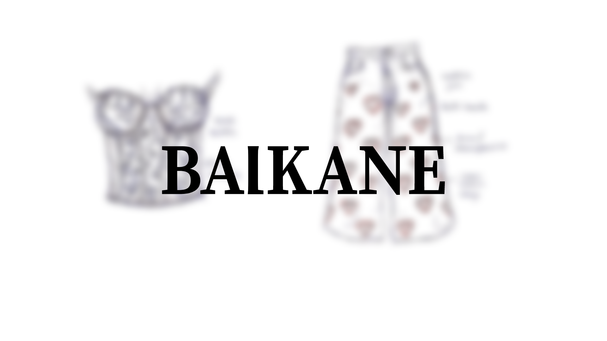
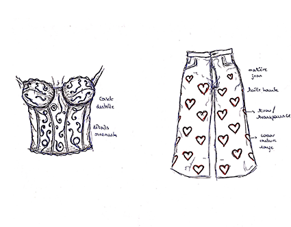
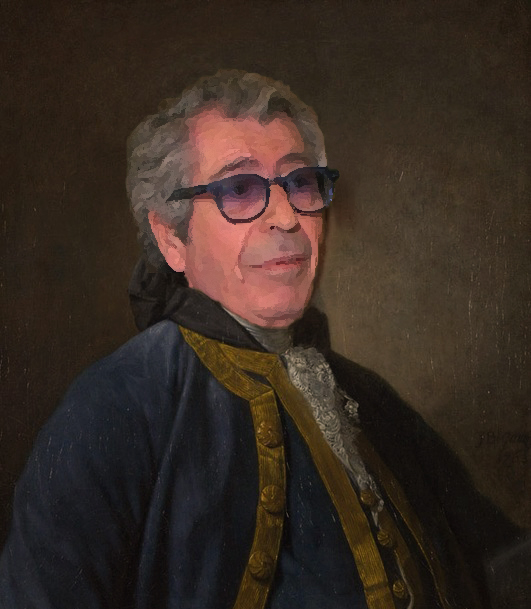

Créée en 2010, Balkane est une marque bordelaise, vouée à la réutilisation et transformation des matériaux. Engagée et curieuse, elle s’intéresse à tous les aspects de la création, pour s’adresser à vous, tout particulièrement. À chaque collection, la marque collabore avec des étudiants en design pour inventer un univers graphique, scénographique et textile, et communiquer autour du projet. Veuillez noter que malgré son nom ambigu, la marque s’engage à ne pas détourner d’argent.

.png)
Pour cette collection Pop’Adour De Nîmes, les créateurs s'intéressent au jardin défendu, à l’idée de vêtements qui suggèrent, sont fait de jeans et de matières plus transparentes, aussi kitsch qu’extravagants. Pour présenter la collection, le pop-up store vous accueillera dans une ambiance intimiste, mêlant plume et upcycling. Toujours dans une atmosphère kitsch, mais également translucide et circulaire.
Ionna Balkane est née en Grèce en 1980. Élève studieuse et très intéressée par la mode, elle accédera à un Bachelor Stylisme Modélisme à l’IFA de Paris. Elle sort de la formation avec toujours autant d’entrain et de solides capacités. Ayant décroché un poste suite à un stage dans la capitale, elle y restera 4 ans. Toutefois, la proximité de l’eau finira par lui manquer et elle décide ainsi de s’installer à Bordeaux. C’est à 30 ans qu’elle décide de se lancer et crée Balkane. Depuis, sa marque collabore avec étudiants et professionnels pour trouver de nouvelles solutions écologiques et proposer des articles de qualité.
